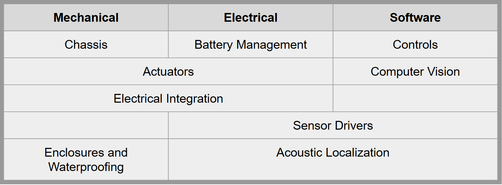
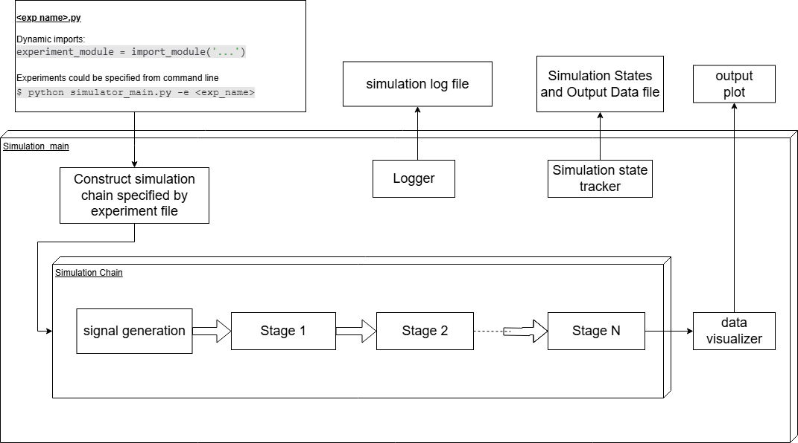
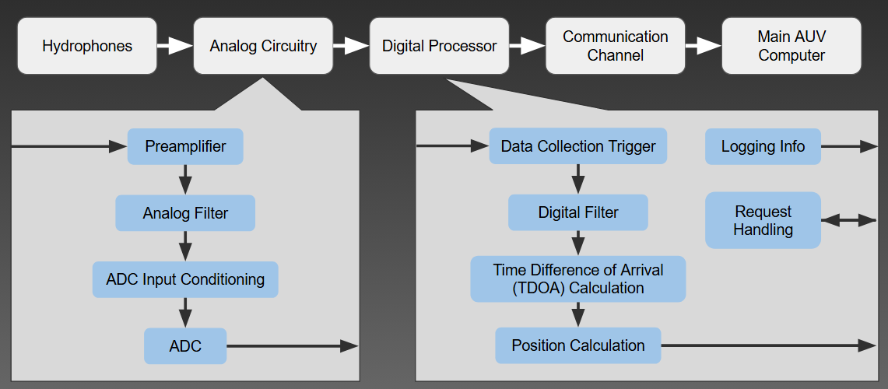

for four years (two of those as team captain), I was part of UBC Subbots: a student design team at UBC making an autonomous underwater vehicle (AUV).
As team captain, I focused on expanding the technical capabilities of the robot for the new design. As a young team, the first revision of the robot was mostly focused on creating a functioning, driving AUV. For the new revision, I planned to add an acoustic localization system and actuators that will allow us to complete competition tasks beyond navigation. Due to the increase in design complexity, the team roughly doubled in size. To allow for a smooth transition, I focused on facilitating and ensuring good communications between sub-team leads, and held weekly status meetings to ensure sub-teams were up to date on each others' progress. The overall team structure is shown in the image below.
A huge challenge I faced on the management side was helping the team navigate through Covid. All team operations had to be moved fully online for a period of a year and a half, and I needed to find a way to continue progress on the project in a fully remote setting. I used this as an opportunity to do a full re-design of the robot, and add the acoustic localization and actuator systems. At the same time, I worked with UBC's design team management to send some equipment to a few team members to allow them to conduct more hands on work.
One of my main contributions to the team was leading a project to build an acoustic localization system. This system uses hydrophones to capture sound from underwater pingers of known frequency, and computes the direction of the pinger relative to the robot. Initially, I created a simulator to test various localization algorithms. The simulator was made of modular "stages" that the signal could pass through (signal generation, error injection, filters, digitizers, and the localization algorithm stages). The idea was to have a modular structure where we can pick and choose various stage combinations.
Alongside testing localization algorithms in the simulator, the team focused on ironing out the system hardware. This includes exploring various analog filter designs, triggers to begin data collection, and which processor to use for computation. A diagram of the overall architecture of the system is shown below, indicating the signal progression throughout the system
This project was a big undertaking for our team, as we had to design the entire system from scratch, with a limited budget and limited space in the water-proof enclosure. We started by breaking up the project scope into more manageable chunks - the simulator to test localization algorithms, the analog filter and pre-amplifier near the hydrophones, selecting the right processor for the system, etc. At the same time it was critical to continuously communicate with the software and mechanical teams to ensure our design decisions align with their work.